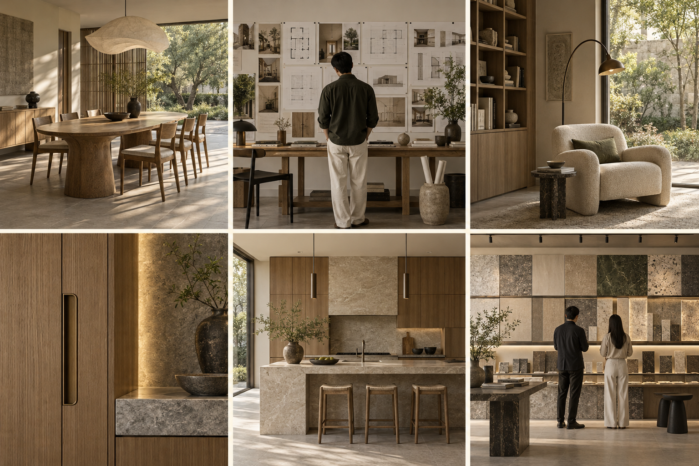

让客户看见共美，
愿意主动了解与咨询。
围绕共美品牌与目标客户，统筹短视频、图文、微信关系和线下渠道，持续获得匹配的装修咨询。
整体运营思路
内容让人认识，关系让人信任
同一套成片，同步发布
按阅读场景调整文字
案例资料辅助介绍
搜索、公众号和展示页面补充资料，让客户进一步了解共美。
内容与运营
负责线上内容、账号运营及渠道统筹，跟踪客户反馈并持续优化。
专业与渠道支持
提供案例、出镜与专业审核，协同现有客户、合作伙伴和线下场景拓展。
主要面向重视设计品质、个性化需求和完整服务的客户，围绕设计、产品（服务）与施工建立信任。
渠道获客
两个核心账号讲什么
共美品牌账号与夏老师个人 IP

一个家的完成，
不只是一张效果图
设计 · 产品 · 施工需求 → 设计判断 → 空间细节
不看电视的客厅，
该围绕什么设计？
从家庭的生活习惯出发需求 → 设计判断 → 空间细节
两个核心账号，各有明确内容
让客户理解共美，愿意把项目交给共美
首批内容方向
- 为什么创立共美：从客户装修中的实际问题出发，讲清如何结合设计师的专业能力与装修组织的落地能力。
- 创始人与共美：夏老师为什么推动这件事，个人经历怎样形成平台的服务理念。
- 共美如何完成一个家：用一个完整案例，串联需求、设计、产品、施工及最终使用效果，展示平台协作。
持续内容：完整案例、服务差异、项目进度与客户反馈。设计师、品牌与施工团队以共美项目参与方呈现，积累平台信任。
主要形式：平台介绍、完整案例短片、项目跟拍、服务过程讲解。咨询进入共美统一接待。
让客户看懂专业，也了解做事的人
核心内容主线
- 设计理念：如何理解家庭需求、怎样做预算取舍、为什么这样布置，让专业判断变得易懂。
- 真实案例：拆解一个具体问题，从原有矛盾、方案选择讲到使用结果，呈现设计师如何思考。
- 个人日常与观点：通过真实工作、生活观察和个人表达，呈现性格、审美与做事方式，建立持续关注的理由。
日常内容先访谈再确定：从夏老师真实经历和兴趣中挖掘，不设定未经了解的人设，也不照搬其他行业的内容题材。
主要形式：访谈口述、图纸讲解、现场观察和日常记录。由对人的信任引出专业咨询，再交由共美承接。
前期采用两套内容：抖音与视频号同步视频，小红书与朋友圈同步图文。客户沟通与线下推荐统一承接。
内容传播
视频与图文同步生产、分发。
抖音用具体装修问题吸引新客户
让一个具体问题吸引客户
从家庭生活中的矛盾切入，用案例回答问题：不看电视的客厅怎么布置、收纳怎样适应生活习惯、设计方案为什么这样取舍。通过图纸、实景和现场细节，让客户看懂专业价值。
两个账号各有侧重
品牌号讲共美如何组织完整服务，夏老师个人号讲专业判断和真实日常。同一项目可以拆出不同角度，不重复讲同一段介绍。
与视频号同步
前期共用成片，按平台需要调整封面和发布文字。根据评论、私信中的真实问题继续选题，有明确需求时进入共美统一接待。
视频号让内容通过熟人关系传播
前期同步抖音的同一套视频，不另起一套制作。发挥微信关系传播的作用，让客户和伙伴更容易认识共美、转发案例。
内容怎样传出去
- 真实案例配简短说明，方便共美成员和伙伴转发。
- 夏老师观点与现场判断，呈现专业能力及做事方式。
- 客户咨询时，直接分享匹配的视频，辅助解释服务。
关注转发后的咨询和反馈，将有价值的问题补进后续内容。
小红书让有装修需求的人找到匹配案例
客厅少一点堆砌，
生活多一点空间
第 1 张：问题 后续图片：选择与细节需求 → 设计判断 → 空间细节
以图文案例为主
一组图讲清一个项目或一个空间问题：原始需求、设计选择、关键细节和使用效果。标题围绕客户会关注或搜索的问题，避免只写风格名称。
与朋友圈共用素材
同一套案例图文同步用于朋友圈；小红书补充便于阅读、检索和收藏的标题与说明，不重复生产两套内容。
根据评论与咨询，持续补充户型、功能、选材和服务方面的问题。
朋友圈持续让已有关系了解共美
让已有关系持续了解共美
前期与小红书共用图文，朋友圈配更简洁、自然的说明。内容结合真实工作，不连续堆叠宣传海报。
- 项目进展：今天解决了什么问题，现场有什么变化。
- 设计细节：这个安排为什么适合客户的生活。
- 客户反馈：经授权分享实际使用感受。
- 服务与活动：说明可以了解什么、怎样预约。
共美成员和伙伴可结合自身关系转发；有人回复或询问时转入一对一沟通，避免在朋友圈反复催促成交。
公众号、官网与展示页面沉淀能反复查看的品牌与服务资料
建立一份随时可查的共美资料
集中放好平台介绍、夏老师与团队、服务范围、完整案例和联系方式。客户从短视频或朋友推荐认识共美后，可以进一步了解。
按用途分配内容
- 公众号：适合讲完整案例、服务方法和较长的专业内容。
- 官网或展示页：便于快速查服务、案例和联系入口。
- 服务平台：通过验收后逐步承接订单和进度查看。
优先复用已审核资料，按实际维护能力推进，保持不同入口的信息一致。
客户搜索获客根据目标客户的搜索习惯，让相关内容在需要时被找到。
先确认客户在哪搜、搜什么
向已有客户和新咨询客户了解：装修前在哪些平台查资料、用过什么关键词、比较过哪些内容、最终因为什么来咨询。结合服务范围和客户需求，建立搜索主题清单。
按搜索意图安排内容
| 客户在找什么 | 待验证的搜索入口 | 对应内容 |
|---|---|---|
| 适合自己的空间与生活方式 | 小红书、抖音等内容平台 | 真实户型、家庭需求、功能改造、风格与使用体验；用图文和视频回答具体问题。 |
| 本地设计与完整装修服务 | 抖音、小红书、本地搜索 | 围绕“合肥＋全案设计 / 装修服务 / 真实小区或户型”等主题，展示匹配案例、服务范围和落地过程。 |
| 了解共美与夏老师是否适合自己 | 微信搜索、内容平台及网页搜索 | 统一品牌与人物介绍，展示专业判断、完整案例和客户反馈，方便客户进一步核实。 |
| 如何联系或到店沟通 | 地图、品牌页面、微信入口 | 提供准确的地址、联系方式和预约方式，接入统一接待流程。 |
以上为首批验证方向，不以预算档位直接推定平台偏好。根据实际客户来源调整优先级。
针对搜索怎么改
将客户真实使用的词自然写入标题、封面、正文与案例说明，使用准确的小区、户型、城市和服务信息。同一主题的视频同步抖音与视频号，图文同步小红书与朋友圈；朋友圈主要承担关系传播，图文的公开搜索承接侧重小红书等可检索入口。
找到之后怎么接
让每条内容都说明共美能提供什么，并提供合适的咨询方式。客户咨询后记录平台、搜索词及吸引他的案例，征得同意后添加共美接待人员的企业微信，由共美负责后续沟通。
怎么判断是否有效
关注搜索带来的有效咨询和实际客户匹配度；平台提供搜索数据时结合查看。持续补充能解决客户问题的内容，不以关键词堆砌或排名承诺代替效果。
直播与线上答疑通过沟通进一步建立专业信任
围绕真实问题开展答疑
提前收集客户关心的户型、预算取舍及服务问题，由夏老师结合案例解释。先做小规模尝试，准备好图纸和案例资料，不单纯追求热闹。
直播前后连起来
直播前发布主题、邀请有相关需求的人；直播中回答具体问题；结束后整理未解答问题，对愿意进一步沟通的客户安排接待。
以有效咨询、后续面谈和客户反馈判断是否继续，不把即时成交作为唯一目的。
客户沟通与承接
接住咨询，持续跟进需求。
企业微信咨询与客户协作共美接待人员一对一沟通，需要时建立专属客户群。
新客户：企业微信一对一咨询
各渠道咨询在客户同意、符合平台规则的前提下，引导添加共美接待人员的企业微信。客户继续使用自己的微信，由共美接待人员介绍服务、了解需求，并安排进一步沟通。
需要多人协作：建立专属客户群
需要设计师或其他专业人员参与时，由共美企业微信成员建立专属客户群，一户一群，加入客户及必要的服务人员。由共美明确群内负责人，集中沟通需求与待确认事项。
原有关系：个人微信自然转介
个人微信保留熟人联系和转介绍作用，经客户同意后转给共美企业微信接待人员。暂不添加的客户，继续通过原渠道沟通。
职责边界：内容运营团队负责咨询入口配置、来源记录和信息转交；后续客户沟通与跟进由共美接待及专业人员负责。
线下关系与转介绍
通过老客户、伙伴及线下场景获得需求。
老客户与转介绍从已有信任中发现新需求
先回访，再了解新需求
由熟悉客户的人联系，了解房屋使用感受和仍需解决的问题。针对实际需求提供服务，不把回访变成单纯索要推荐。
让推荐更容易
准备便于转发的案例和共美介绍。客户愿意介绍朋友时，明确接待人，及时联系并跟进，让推荐关系得到妥善承接。
记录推荐来源与处理进展，尊重客户及被推荐人的沟通意愿。
设计师、品牌与施工伙伴让伙伴触点形成有效推荐
让伙伴知道哪些需求适合共美
提供清晰的服务介绍和匹配案例，说明共美能协调解决什么问题，让伙伴在门店、项目沟通和日常关系中发现需求。
推荐方式要简单
指定对接人，客户同意后转交基本需求；由共美判断匹配、安排接待，并向伙伴反馈承接情况。共享的案例和图文也可用于伙伴朋友圈及线下展示。
第六空间、门店与线下活动通过面对面体验推动进一步沟通
围绕客户真正想了解的事情见面
利用可确认的场地与现有活动资源，安排案例分享、需求沟通、选品体验或设计答疑，让客户能够看到、询问和比较具体服务。
一次活动有一个明确主题
围绕主题准备案例、展示材料和邀约内容，落实现场讲解与接待。活动规模和形式根据实际资源安排。
现场沟通之后继续跟进
征得同意后记录客户问题、添加共美接待人员的企业微信，发送相关资料或安排面谈，让线下体验自然衔接后续服务。
同行与异业合作接入互补的客户来源
同行：承接不同客群，互相推荐合适的项目
与服务价位、项目类型和承接能力不同的装修公司建立联系。有的同行遇到超出自身设计或落地能力的需求，可推荐给共美；不适合共美服务范围的项目，也可经客户同意，推荐给更匹配的同行。
异业：找到装修需求出现之前的行业触点
按住宅、商业空间和居住改善三类拓展。以下是建议对接方向，优先从已有关系和服务能力匹配的行业切入。
住宅装修｜围绕买房、交房和改造
房产经纪与二手房门店
关联需求：购房、置换之后的装修与旧房改造。
怎么合作：对接门店负责人和经纪人，提供对应户型案例；客户需要时介绍共美进行空间沟通。
楼盘销售与交付服务团队
关联需求：新房交付、精装房个性化调整。
怎么合作：在项目允许的范围内开展户型答疑、交付后的设计咨询；先核实楼盘合作规则。
物业公司与社区服务中心
关联需求：业主主动提出的翻新、功能改善和局部改造。
怎么合作：对接物业服务负责人，安排预约制咨询或社区设计分享，由业主自愿联系。
验房与房屋检测服务机构
关联需求：收房后发现问题，进一步考虑整改或重新装修。
怎么合作：独立说明检测结论；客户另有装修需求时推荐设计咨询，整改责任与装修服务分开沟通。
商业空间｜围绕选址、开店和升级
二手厨房设备商与餐饮设备供应商
关联需求：餐饮创业者采购灶具、冰箱时的开店装修需求。
怎么合作：从已有熟人引荐，提供餐饮空间服务介绍；客户愿意了解时，再转给共美评估。
商铺中介、商业招商与园区运营
关联需求：商铺签租、企业入驻后的店铺或办公空间装修。
怎么合作：对接招商及租赁负责人，讲清共美适合的项目类型，承接入驻前的空间咨询。
餐饮品牌策划与开店服务机构
关联需求：品牌筹备、门店升级，需要将品牌定位落实到空间。
怎么合作：从已有商业客户关系切入，围绕一个具体项目沟通品牌与空间如何配合。
居住改善｜围绕生活变化发现需求
收纳整理与居家适老化服务机构
关联需求：收纳不足、动线不便、家庭成员变化带来的空间改造。
怎么合作：从客户已提出的问题切入，区分整理服务、产品配置与装修改造，确有设计需求再介绍共美。
合作方先询问客户意愿，再介绍给共美接待人员；不直接索取或交换业主、购房者名单。商业空间项目按共美实际能力和排期判断。
现有商业关系：从熟悉的经营者开始
梳理已有餐饮及其他行业客户关系，关注新店筹备、门店改造和空间升级需求。由熟悉对方的人引荐，共美负责人进一步沟通，介绍服务能力与适配项目。